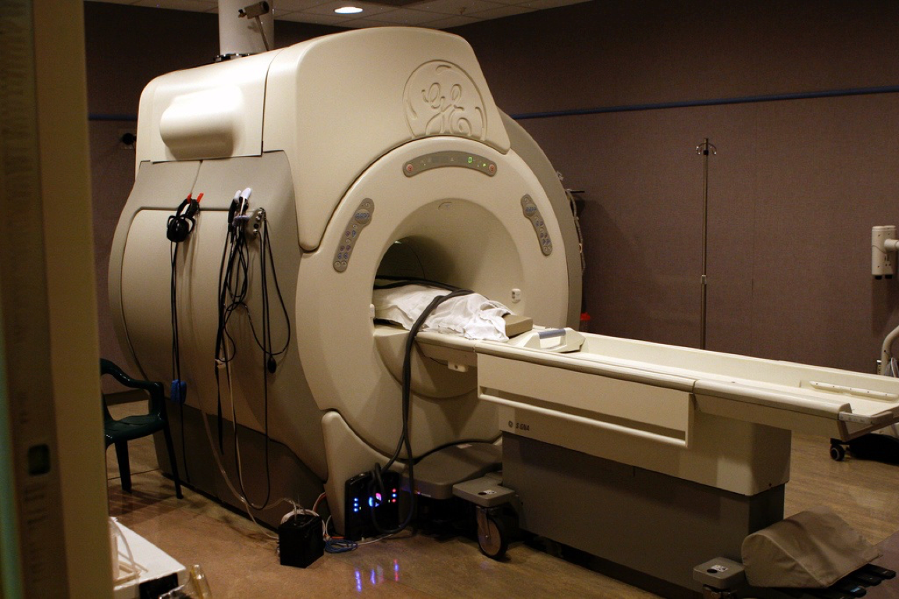
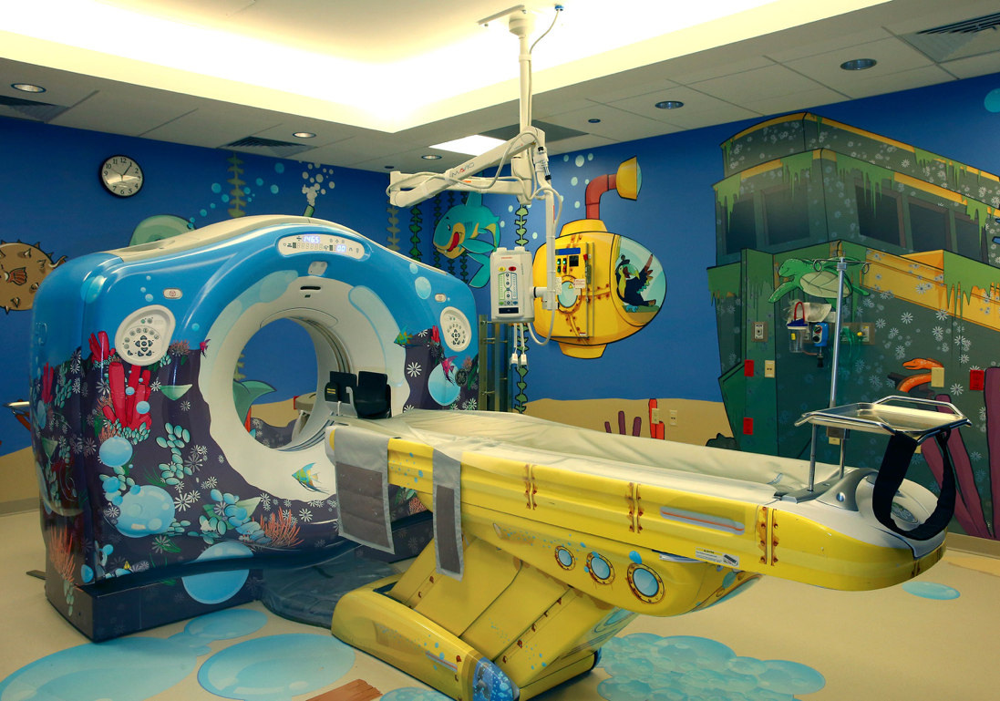

"UX" != "Make it Pretty"
- User research
- Usability testing
- A/B testing
- Interaction design
- Analytics
- Taxonomy & Information architecture
- Design culture evangelism
- Visual & UI design
Visual & UI design are the output of a much lengthier discovery & design process.
The UX Process, Abstracted
- Empathy
- Research & define the problem
- Ideate
- Prototype
- Test
- Identify & support development of a solution
- Iterate!
UX Strives to Align Seemingly Disparate Goals
- User goals
- Business goals
- Design goals
- Tech goals
Well-Executed UX Ensures
- Products that meet & exceed expectations
- Increased adoption & efficient usage of apps & tools
- Less training of software—more training of business process

80% of patients had to be sedated.
“I failed at my job with the first machine.”
So the designer went back to the drawing board, redesigning what was already an acclaimed, commercially successful product.

Sedation rates dropped from 80% to 0.01%.
Sedation was addressing the symptom, not the root problem.
UX Strives to Align Seemingly Disparate Goals